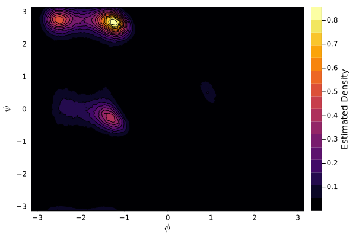
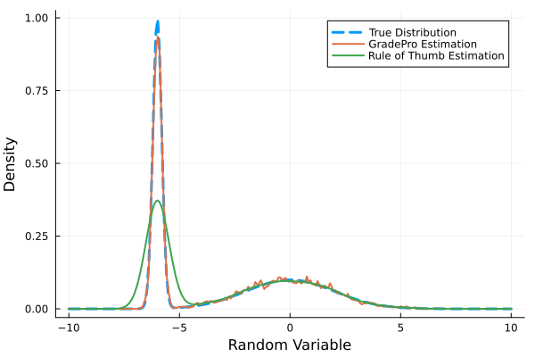

ParallelKDE
ParallelKDE is a package for flexible and efficient kernel density estimation (KDE), with a strong focus on parallel implementations. Its core estimator, the GradePro Estimator described here, supports CPU and GPU acceleration (threaded and CUDA), and its designed to scale with modern hardware. While the package is centered around grid-based KDEs, it also provides extensible infrastructure to support and implement other types of estimators.
The user interface is built around a modular design that separates concerns between grids, devices, density objects and estimation routines. This allows users to easily switch estimators, control execution targets (e.g., CPU or GPU), and prototype new estimation strategies without rewriting boilerplate code.
Typical usage involves:
- Instantiating an estimation in a specific device (e.g., CPU, CUDA),
- This also involves defining a grid for the estimation or using a default grid,
- Estimating the density with a chosen estimator,
- Accessing the resulting density.
Basic Example
For example, to estimate a density on a CPU with a default grid using the GradePro Estimator, you can use:
using ParallelKDE
data = randn(1, 10000) # 1-dimensional sample of 10000 points
density_estimation = initialize_estimation(
data,
grid=true, # default grid
device=:cpu,
)
estimate_density!(
density_estimation,
:gradepro,
)
density_estimated = get_density(density_estimation)We can evaluate the standard normal distribution for comparison:
using Distributions
grid_coordinates = get_coordinates(get_grid(density_estimation))[1, :]
density_true = pdf.(Normal(), grid_coordinates)which would yield a plot like this:
using Plots
p = plot(grid_coordinates, density_true, label="True Density", color=:cornflowerblue, lw=2)
plot!(p, grid_coordinates, density_estimated, label="Estimated Density", color=:firebrick, lw=2)
plot!(p, xlabel="Random Variable", ylabel="Density")
Density Estimation for Conformational Samples
Here, we exemplify the use of ParallelKDE to estimate the conformational density of alanine dipeptide via dihedral angles.
We start by downloading and reading the dataset of dihedral angles obtained from molecular dynamics trajectories [1] [2].
using Downloads
using NPZ
url = "http://ftp.imp.fu-berlin.de/pub/cmb-data/alanine-dipeptide-3x250ns-backbone-dihedrals.npz"
dest = joinpath(pwd(), "ala_dipeptide_dihderals.npz")
Downloads.download(url, dest)
ala_npz = npzread(dest)
ala = vcat(values(ala_npz)...)
# afterwards one may need to subsample the dataset to obtain uncorrelated samples.This time around we will define the grid that we want to use for the estimation instead of using the default grid:
using ParallelKDE
phi_range, psi_range = fill(range(-π, π, length=250), 2)
dihedral_grid = initialize_grid([phi_range, psi_range], device=:cpu) # or device=:cuda
density_estimation = initialize_estimation(
ala', grid=dihedral_grid, device=:cpu # or device=:cuda
)
estimate_density!(density_estimation, :gradepro)
estimated_density = get_density(density_estimation)Finally, we can create a contour plot of the estimated density:
using Plots
using LaTeXStrings
p = contourf(phi_range, psi_range, estimated_density')
plot!(p, xlabel=L"$\phi$", ylabel=L"$\psi$", colorbar_title="Estimated Density")
GradePro vs Rules of Thumb
ParallelKDE also provides a Rules of Thumb Estimator for bandwidth selection based on widely used rule-of-thumb heuristics. As with the GradePro Estimator, this estimator is available in both serial and CUDA variants. In practice, the Rules of Thumb approach can be extremely fast and yields competitive accuracy when the sample distribution is close to Gaussian; however, its performance can degrade rapidly as the underlying distribution departs from Gaussianity. Now, we illustrate this trade-off by comparing results produced by both estimators on samples drawn from a bimodal distribution.
We first initialize the distribution and obtain samples from it:
using Distributions
distro = MixtureModel(
Normal[
Normal(-6.0, 0.2),
Normal(0.0, 2),
]
)
samples = rand(distro, 1, 10000) # 1-dimensional sample of 10000 pointsWe can again initialize a grid and the estimations for both methods with:
using ParallelKDE
xs = range(-10, 10, length=250)
grid_bimodal = initialize_grid([xs], device=:cpu) # or device=:cuda
estimation_gradepro = initialize_estimation(
samples, grid=grid_bimodal, device=:cpu # or device=:cuda
)
estimation_rot = initialize_estimation(
samples, grid=grid_bimodal, device=:cpu # or device=:cuda
)Now we can execute both estimations and calculate the true density with:
estimate_density!(estimation_gradepro, :gradepro)
density_gradepro = get_density(estimation_gradepro)
estimate_density!(estimation_rot, :rot)
density_rot = get_density(estimation_rot)
density_true = pdf.(distro, xs)Finally, we can visualize the results with:
using Plots
p = plot(xs, density_true, lw=3, ls=:dash, label="True Distribution")
plot!(p, xs, density_gradepro, lw=2, label="GradePro Estimation")
plot!(p, xs, density_rot, lw=2, label="Rule of Thumb Estimation")
plot!(p, xlabel="Random Variable", ylabel="Density")
Usage Summary
As is exemplified above, it is possible to initialize an estimation using
ParallelKDE.initialize_estimation — Function
initialize_estimation(data; kwargs...)Initialize a density estimation object based on the provided data.
Arguments
data::Union{AbstractMatrix,AbstractVector{<:AbstractVector}}: The data to be used for density estimation.grid::Union{Bool,G<:AbstractGrid}=false: Whether to create a grid for the density estimation.
If true, a grid will be created based on the data ranges. A grid can also be provided directly.
grid_ranges=nothing: The ranges for the grid coordinates ifgridistrue.
This has priority over other grid parameters.
dims=nothing: The dimensions of the grid ifgridistrue.grid_bounds=nothing: The bounds for the grid ifgridistrue.grid_padding=nothing: Padding for the grid ifgridistrue.device=:cpu: The device to use for the density estimation. It should be compatible with the estimator to be used.
Examples
data = randn(1, 1000);
density_estimation = initialize_estimation(data; grid=true, grid_ranges=-5.0:0.1:5.0, device=:cpu);Then, the density can be estimated with a chosen estimator and its settings using
ParallelKDE.estimate_density! — Function
estimate_density!(density_estimation::DensityEstimation, estimation_method::Symbol; kwargs...)Estimate the density using the specified method and update the DensityEstimation object.
For a list of available estimation methods and their keywords, see the documentation for the specific estimator.
Finally, the estimated density can be accessed using
ParallelKDE.KDEs.get_density — Method
get_density(density_estimation::DensityEstimation; normalize=false, dx=nothing)Obtain the estimated density from a DensityEstimation object.
If the normalize argument is set to true, the density will be normalized. If density_estimation has a grid, its spacing will be used for normalization. Otherwise, dx must be provided to normalize the density.
More details regarding the currently implemented estimators as well as further information about the package can be found throughout the documentation.
- Devices Interface
- Direct Space Interface
- Estimators Interface
- Fourier Space Interface
- Grids Interface
- KDE Interface
- ParallelKDE Interface
- Contributing and Support
- GradePro Estimator
- Rules of Thumb Estimator
- ParallelKDE
- Installation